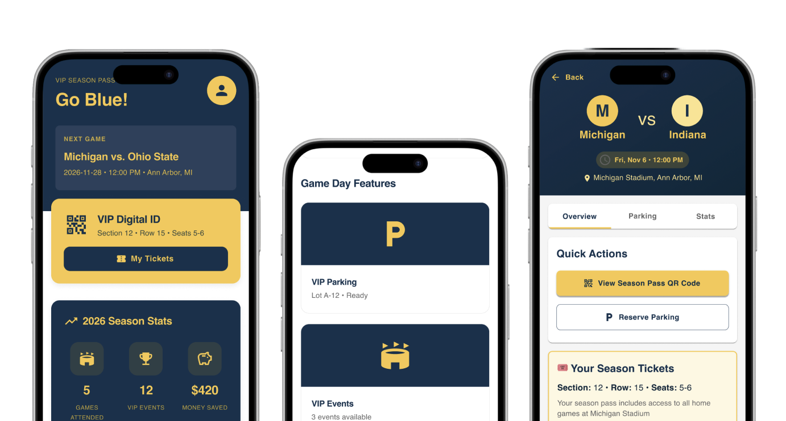
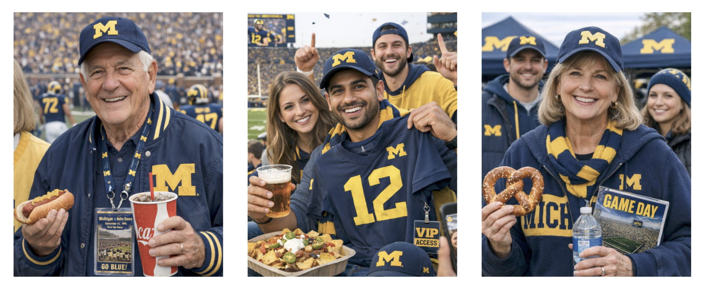
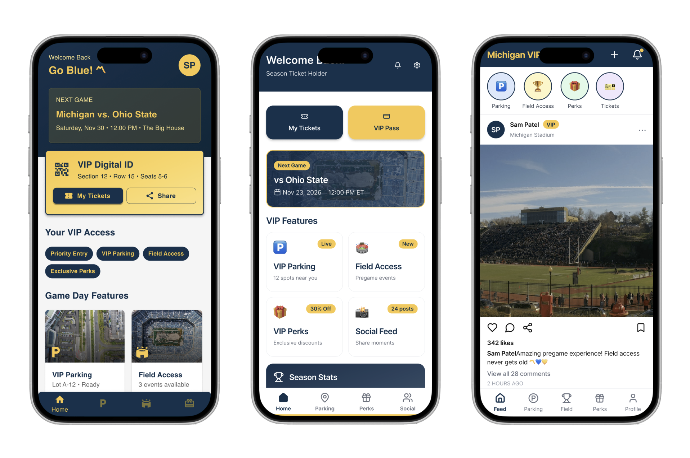
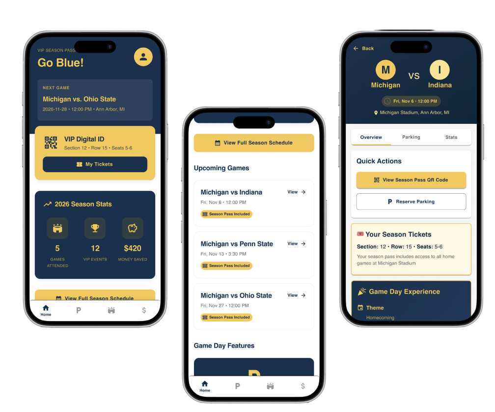
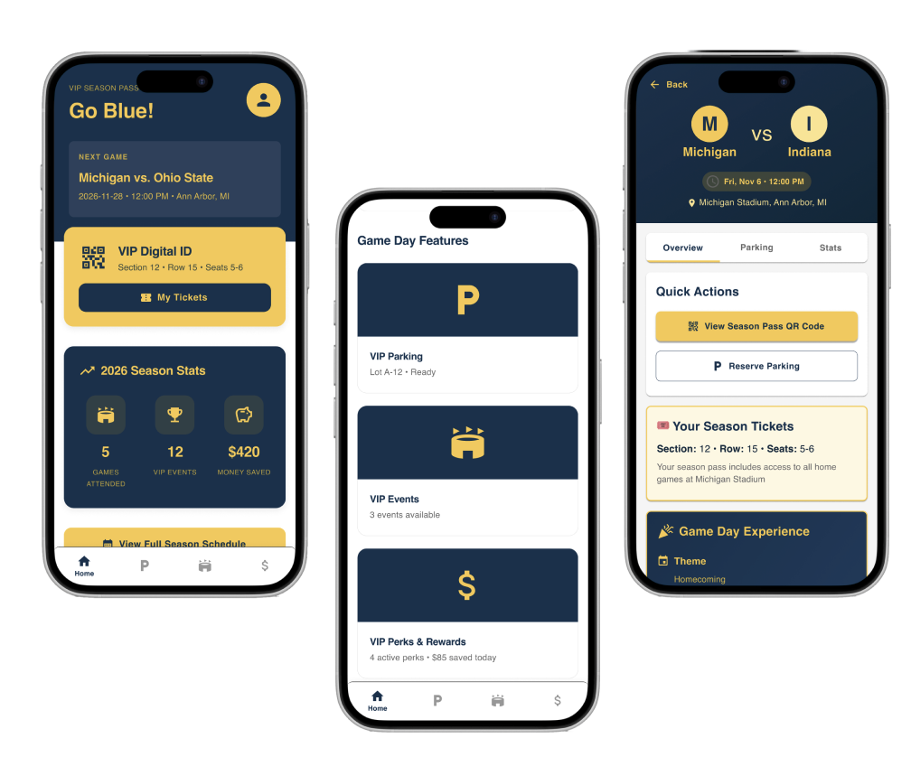
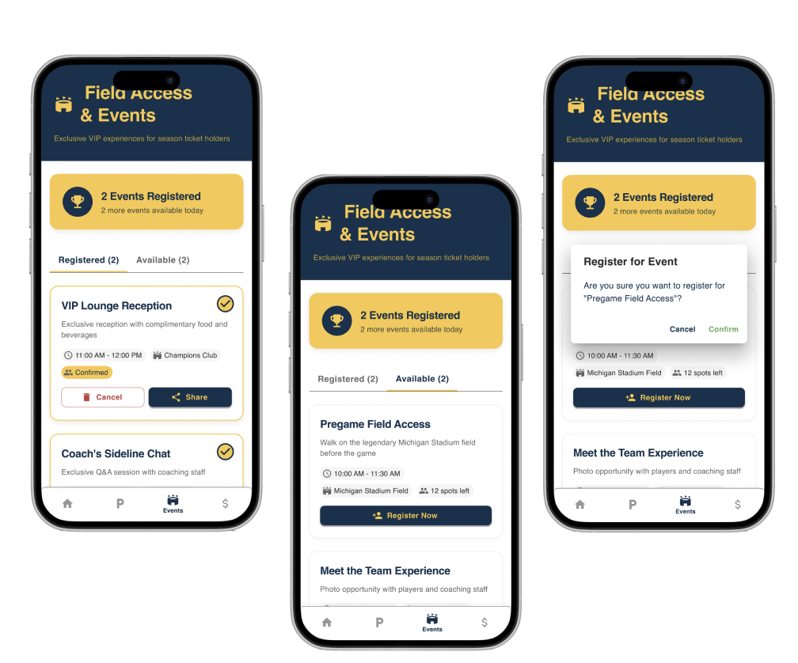

CASE STUDY — [PRODUCT / UX DESIGN]
Big House Pass — A mobile app for VIP U of M Football fans
Big House Pass is a high-fidelity mobile app concept designed to create a more seamless VIP gameday experience for University of Michigan football season ticket holders. Developed as a class project prompted by Atomic Object in Ann Arbor, the project explored how AI could support the UX design process—from research synthesis to prototyping—while addressing common gameday friction points like parking and access to exclusive events. Stakeholder interviews, competitor analysis, and usability testing informed key design decisions throughout the process.

The Process
How it came togetherU of M football season ticket holders need unified access to game day information.
University of Michigan football season ticket holders currently lack a unified and convenient way to access exclusive game day perks. As a result, VIP attendees may miss valuable experiences and encounter unnecessary logistical friction—particularly around parking and event coordination.
User Research
Design decisions were informaded based on user research conducted through interviews and usability tests.
-
Interviews
Parking and social events emerged as top priorities, while users showed limited interest in adding social features due to the abundance of existing social platforms.
-
Analysis
Using AI to synthesize interview notes, key themes and recurring priorities quickly surfaced, making insights more organized, scannable, and easier to act on.
-
Personas
AI-generated personas provided greater depth and detail, while manual refinement ensured the final personas remained accurate, diverse, and representative of users.

Developing a PRD
Focuses
Refinement from AI output
Iteration through AI
With preliminary research complete and the PRD in place, I began developing the app using Figma Make and Claude. I explored three distinct prompting directions to test different approaches to branding, navigation, and functionality.
The first iteration established the strongest foundation, combining clear navigation with a cohesive visual identity, despite AI initially introducing unnecessary actions that complicated usability. The second and third directions explored additional features, including social and profile components, but introduced visual noise, unclear navigation, and inconsistencies with the PRD and brand system. These explorations helped identify what to carry forward, and what to refine, as the prototype evolved.

The first iteration established the foundation for the final design, which evolved through 40 versions built entirely in Figma Make. Each version was refined through multiple prompts focused on usability, visual design, and client recommendations. This iterative process allowed the prototype to evolve from an initial concept into a more polished and user-centered experience.
Design Decisions
Prioritization of Game-Day Tasks
Along with the main features I focused on (Parking, Events, and Perks), I've included game-day information and a season schedule. These features enhance the game day experience by making it easy to plan ahead of time. Although not required in the PRD, I believe it is crucial information that users should be aware of.
AI Usage
Figma Make introduced many of these features in earlier prototype iterations, which I carried forward into the final version to further refine and elevate the overall design.

Navigational Clarity
Based on the scope outlined in the PRD, the app features a scrollable homepage that directly leads to the three key features. Accessible from the homepage, navbar, and individual game pages, the three key features are prominent throughout the app, ensuring that they won’t be missed by users.
AI Usage
These features were developed with minimal prompting, as Figma was able to interpret and build upon the requirements established in the PRD.

Clear System Status and Availability
Based on feedback in the usability tests, separating available and registered/redeemed items through different, editable tabs helps organize information and creates consistent counts of what is currently available.
AI Usage
Figma implemented this interaction with minimal prompting, adding separate tabs, confirmation buttons, and drag-and-drop functionality to move cards between tabs.

The Final Product
See it in action[Short summary of the finished product — what it looks like, how it works, and the outcome it delivered.]
![[Describe what this image shows]](images/project-final-1.jpg)
![[Describe what this image shows]](images/project-final-2.jpg)
![[Describe what this image shows]](images/project-final-3.jpg)
Learning Outcomes
What I'd carry forward[Outcome one]
[What this project taught, specifically — a skill, a working method, or a lesson about a design decision that didn't land the first time.]
[Outcome two]
[What this project taught, specifically.]
[Outcome three]
[What this project taught, specifically.]
Curious about another project?
View all work